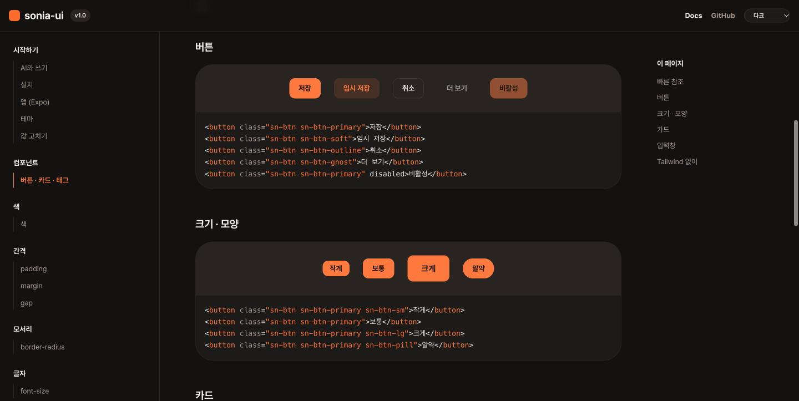

시작하는 네 가지 방법
프로젝트에 맞는 하나만 고른다. 넷 다 같은 색·간격·컴포넌트가 들어온다.
AI에게 맡긴다
Claude Code 등에 붙여 넣으면 규칙 파일 하나를 읽고 hex·px 없이 만든다.
sonia-ui로 만들어줘. 규칙과 사용법: https://ckdtjs505.github.io/sonia-ui/llms-full.txt
설치 없이 두 줄
정적 페이지·데모. <head>에 넣으면 색·sn-*·테마 선택까지 된다.
<link rel="stylesheet" href="https://cdn.jsdelivr.net/gh/ckdtjs505/sonia-ui@1/src/css/base.css"> <script src="https://cdn.jsdelivr.net/gh/ckdtjs505/sonia-ui@1/src/browser/theme.js"></script>
npm + Tailwind v4
설치 후 CSS에 두 줄. bg-primary, p-lg, text-title을 바로 쓴다.
npm i github:ckdtjs505/sonia-ui /* app.css */ @import "tailwindcss"; @import "sonia-ui/tailwind.css";
Expo 앱
같은 값을 Restyle Box·Text로 쓴다. 이름이 웹과 1:1 (p-lg ↔ padding="lg").
npm i github:ckdtjs505/sonia-ui @shopify/restyle react-native-safe-area-context
import { ThemeProvider, getTheme, Box, Text } from "sonia-ui/native";
<ThemeProvider theme={getTheme("dark")}>
<Box padding="lg"><Text variant="title">안녕</Text></Box>
</ThemeProvider>
테마는 <html data-theme="ocean">처럼 고른다. 없으면 기기 설정(라이트·다크)을 따른다. 규칙은 하나: 색·간격·글자는 hex·px 대신 이름으로 쓴다.
버튼 · 카드 · 태그 · 입력
클래스 두 개를 조합한다. Tailwind와 순수 CSS에서 이름이 같다. 위 테마를 바꾸면 여기도 함께 바뀐다.
디자인
메모
<button class="sn-btn sn-btn-primary">저장</button> <button class="sn-btn sn-btn-soft">임시 저장</button> <button class="sn-btn sn-btn-outline">취소</button> <button class="sn-btn sn-btn-ghost">더 보기</button> <span class="sn-tag">디자인</span> <div class="sn-card"> <input class="sn-input" placeholder="…"> </div>
이미 이 값으로 돌아가는 곳
 Sonia.dev 블로그웹 ·
Sonia.dev 블로그웹 · themes.css
이 문서 사이트웹 ·tailwind.cssself-fire
Expo 앱 ·
sonia-ui/nativeplanner
웹 ·
base.css인라인
이름만 알면 된다
색은 역할로, 간격·모서리·글자는 단계 이름으로 부른다. 웹과 앱이 같은 이름이다 (p-lg ↔ padding="lg").
색 10가지 역할
값 전체 보기background
surface
surface-muted
foreground
muted
border
primary
primary-soft
on-primary
flame